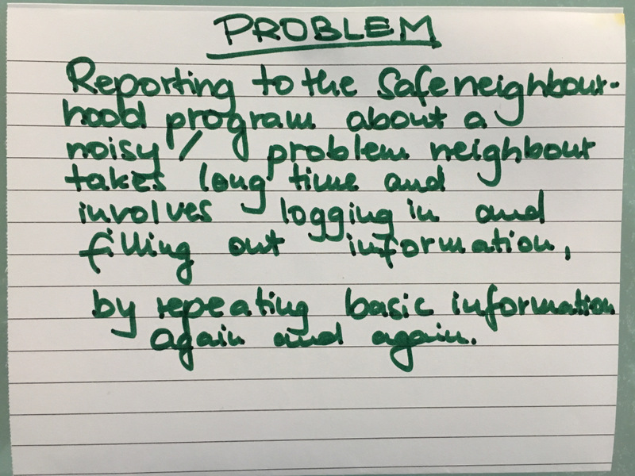
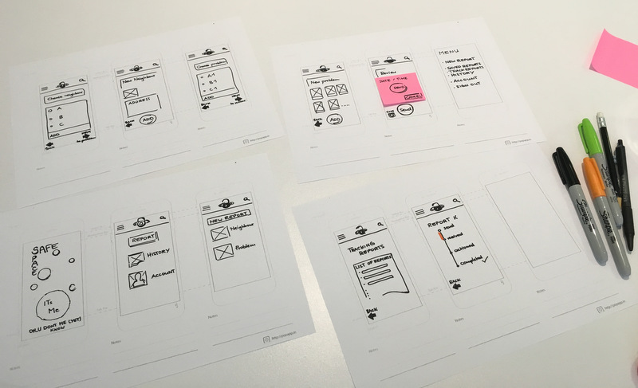
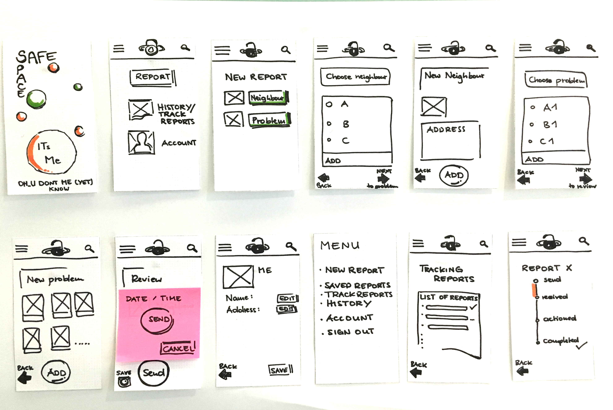

UX Design Bootcamp - SafeSpace
In 2015 I began my journey to find out more about what UX Design was. At work it was the type of software testing which was at that time named 'Usability Testing' which got me interested. However soon I discovered that what I had called 'Usability Testing' was not at all like the real thing.
After some constructive feedback about my portfolio work, I went back to the drawing board and did some Research!
Read more about my indepth research on UX Learning in my blog post.
I found a couple of companies who offered online and onsite training and being based in Southampton (UK), decided to go with GA London for a weekend-long UX Design Bootcamp.
Research
In the first day of the workshop I learned about the definition of UX and what the field of UX encompasses. I got to know various workshop exercises and methods and started on my first venture of designing and conducting effective user interviews.
Conducting User Research means to understand the user and their needs ... and I also learned the very important rule that 'I am not the user!'
We learned which information is important to find out about our users (internal and external factors) and went on to the first task of Partner Interviews.
After the user interviews we decided on one of the identified problems to solve and wrote the problem statement down. We also created a User Persona and described three User Stories.
The primary User Story: 'As Ann, I would like to not repeatedly fill in basic information, so that I can safe time'.
Design
Knowing the problem to solve and user needs and with the help of the User Persona, the next step was to look into the User Flow. User flows come in many different forms. We created a Flow Chart to describe the happy path the user takes on when using the app. After each sketching out the user flow, we presented that to our partners and then revised the user flow again.
We used 'Rapid Paper Prototyping' as an exercise to link our images into a prototype for testing.
Prototype
Working on a Low-fidelity prototype and sketching on paper was a totally new experience for me, and I have learned that it is not staight to technology and making the final product. Communication is very important and to iterate through the prototype. 
We used the Prototyping application Marvel to create an interactive protoype as the next step and to use for further User testing. The final Prototype can be seen below and this marked the first adventure in the world of UX Design!
Conclusion
I left London on high spirits! UX Design is fascinating and such a big field to work in. I learned that there are so many facets to it and that made me even more interested.
Read more about my biggest learning progression and end to end project Taskly!